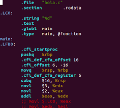
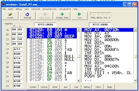
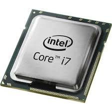
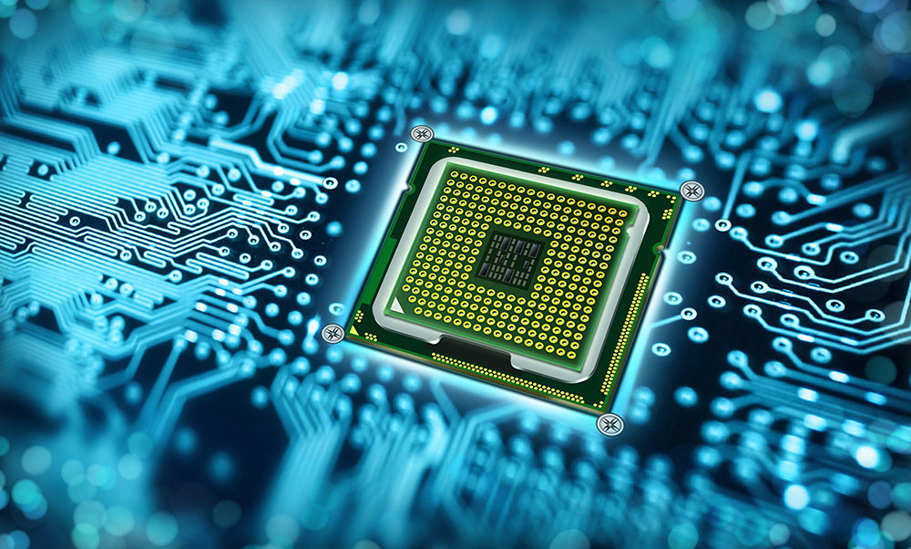
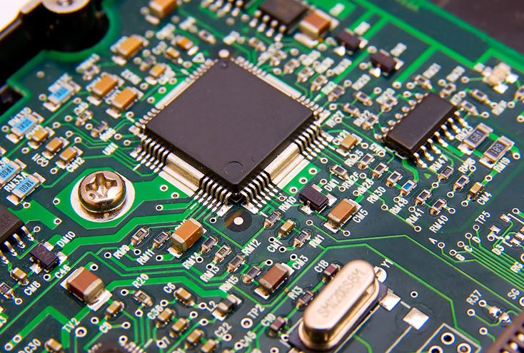
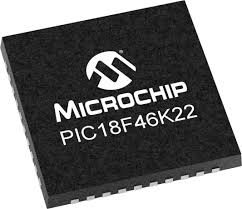
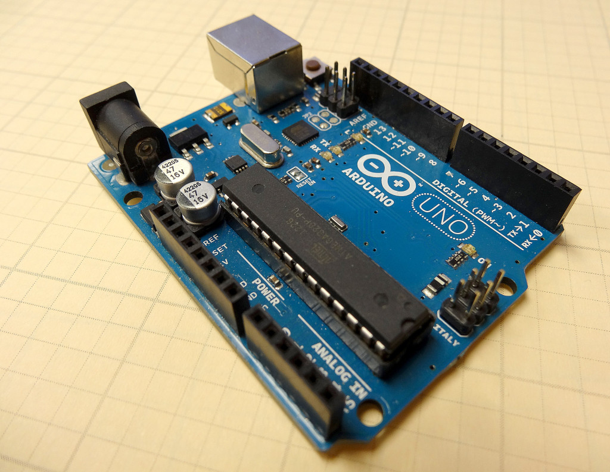

Lenguaje Ensamblador

¿Qué es el Lenguaje Ensamblador?
Lenguaje de bajo nivel que permite programar directamente al hardware, utilizando instrucciones específicas del procesador.

Ejemplo en x86
Un ejemplo típico de código ensamblador para arquitectura x86 con instrucciones como MOV, ADD y JMP.
Sintaxis
Descubre cómo escribir instrucciones, tipos de datos y la estructura básica del lenguaje ensamblador.
Microprocesadores

Intel Core i7
Un potente microprocesador usado en computadoras modernas para tareas generales y alto rendimiento.
AMD Ryzen
Procesador de múltiples núcleos ideal para juegos, diseño gráfico y software exigente.

Explora la evolución de los microprocesadores a través de una línea de tiempo interactiva.
Microcontroladores

Chip programable que controla dispositivos electrónicos en sistemas embebidos.

Usado en proyectos embebidos, con memoria interna, puertos analógicos y digitales.

Placa de desarrollo basada en el microcontrolador ATmega328, ideal para aprender y prototipar.